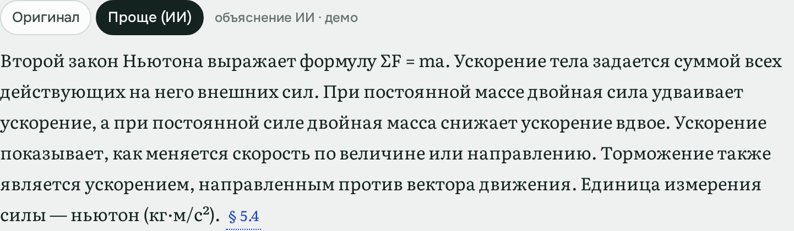
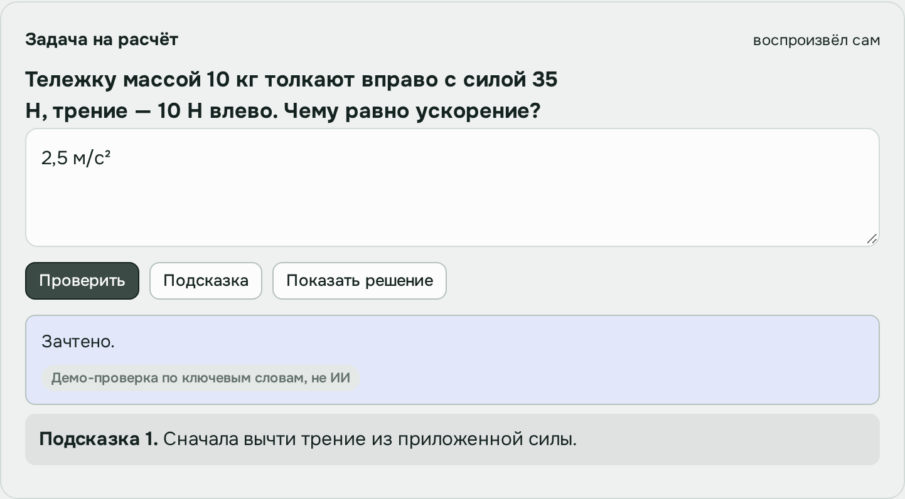
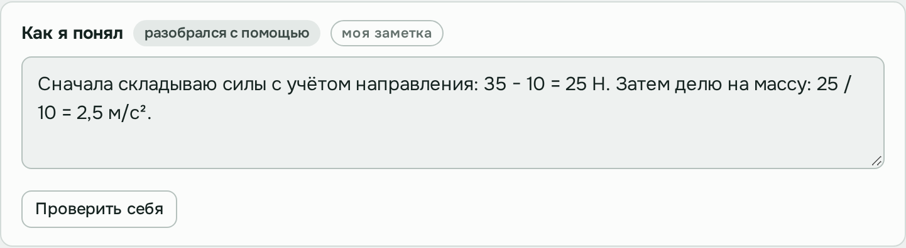

ИИ-компаньон для учёбы
Ваш курс.
Помощник
рядом.
Разобраться в сложной теме. Разобрать домашку. Собрать конспект, который понятен вам.
Готовые уроки · Без регистрации
к пониманию.
Почему тяжёлую тележку
сложнее разогнать?
При той же силе большая масса
даёт меньшее ускорение.
Сначала считаю сумму сил.
Потом делю на массу.
Знакомство за полминуты
Вот как это выглядит.
Один урок. Три шага
от вопроса к своему решению.
Знакомые задачи. Помощник рядом.
Где вы застряли?
Выберите задачу —
посмотрите, что можно сделать.
«Читаю третий раз.
Всё ещё непонятно».
Найдите объяснение,
которое вам подходит.
Разберите конкретный фрагмент: попросите объяснить проще, посмотрите пример и вернитесь к источнику. Сохраните свою формулировку рядом.
Разобрать закон Ньютона
«Теорию понял.
С чего начать задачу?»
Пройдите путь
до своего решения.
Начните с подсказки, найдите следующий шаг и проверьте ответ. Можно раскрыть разбор решения и затем попробовать похожую задачу самостоятельно.
Попробовать задачу
«Разобрался.
Как не потерять мысль?»
Соберите конспект
на своём языке.
Оставляйте собственные выводы рядом с темой, дополняйте конспект полезными объяснениями. Возвращайтесь к тому месту, на котором остановились.
Открыть живой конспект
Учёба складывается в целое
Вопрос ушёл.
Понимание осталось.
Всё связано с тем, что вы изучаете: исходный материал, объяснение, практика и личные заметки.
- 01
Начните с материала
Откройте урок и выберите фрагмент, в котором хотите разобраться.
- 02
Проверьте понимание
Перейдите от объяснения к наглядному примеру, вопросу или задаче.
- 03
Оставьте свой вывод
Запишите, как вы поняли тему, чтобы вернуться к своей мысли позже.
Лучше один раз попробовать
Выберите свой пример.
Два готовых урока.
Можно открыть прямо сейчас.
Законы Ньютона
Разберите силы, решите задачу
и сохраните своё объяснение.
Инструменты ИИ-агента
Посмотрите разбор кода
и попробуйте лабораторию.
Сейчас это интерактивное превью: объяснения подготовлены заранее, проверки демонстрационные. Можно исследовать сценарии и сохранять свои заметки в браузере.
Перед первым шагом
Пара вопросов.
Можно загрузить свой курс?
Пока можно познакомиться с продуктом на двух подготовленных уроках. Загрузка собственных материалов — часть дальнейшего развития, в этом превью она ещё не работает.
Помощник решит домашку за меня?
Сценарий помогает пройти задачу по шагам: получить подсказку, сделать попытку и проверить ответ. Полное решение можно открыть отдельно. После его просмотра предусмотрена похожая задача для самостоятельной проверки.
Что будет с моими заметками?
В превью они сохраняются локально в вашем браузере. Можно закрыть страницу и продолжить позже в том же браузере. Очистка данных сайта удалит заметки; между устройствами они пока не синхронизируются.
От «не понимаю»
к «могу сам».